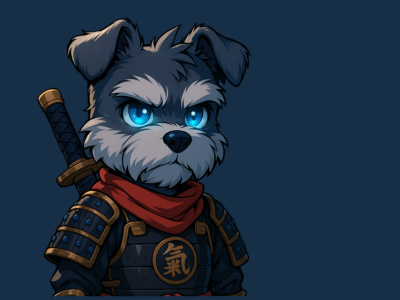

RYO-CHAN の 冒険
運命が交錯する時、小さな武者犬が世界を変える
スクロールして続きを読む
↓
登場人物

RYO-CHAN
年齢:
不明（推定2歳）
種族:
ミニチュアシュナウザー
特技:
運命感知・金融システム理解
小さな武者鎧に身を包んだ神秘的な犬。Web3の世界で重要な役割を果たす運命を背負っている。その愛らしい外見とは裏腹に、世界を変革する力を秘めている。

OLDMAN
年齢:
数百歳
職業:
古の賢者・導師
特技:
予言・古代の智恵・月読み
古から伝わる智恵を持つ謎の老人。月明かりの下でRYO-CHANに重要な啓示を与える。その杖から放たれる光は、迷いし者たちの道を照らす。

SAKURA
年齢:
16歳（見た目）
職業:
神社の巫女？
特技:
花びら操作・瞬間移動
桜の花びらと共に現れる謎の少女。その正体は物語の鍵を握る重要な存在。美しく儚げな外見だが、秘められた力は計り知れない。

SHADOW
年齢:
様々
職業:
闇のハッカー集団
特技:
システム侵入・情報操作
デジタル世界の影で暗躍する謎の組織。高度なハッキング技術を駆使し、世界の裏で糸を引く。その真の目的は謎に包まれている。

？？？
年齢:
不明
職業:
？？？
特技:
すべてを統制する力
すべての謎を握る最重要人物。その正体が明かされる時、物語は大きく動き出す。RYO-CHANの運命に深く関わる存在。
Episode 01
覚醒
満月の夜、古い神社に迷い込んだ一匹の小さな犬。それがすべての始まりだった。神秘的な光に包まれて目覚めたRYO-CHANに待ち受けていたのは、想像を絶する運命の物語。古の賢者が語る予言、隠された力の覚醒、そして世界を変革する使命...。しかし、その背後には何者かの影が蠢いている。果たしてRYO-CHANは自分に課せられた運命を受け入れることができるのか？
Episode 02
歪み
東京の夜に潜む闇の組織。彼らは高度な技術を駆使し、デジタル世界の奥深くで何かを企んでいた。一方、RYO-CHANの覚醒は予想以上の波紋を呼び、各地で不可解な現象が発生し始める。古の力と最新技術が交錯する中、善と悪の境界線は曖昧になっていく。真の敵は誰なのか？そしてRYO-CHANは迫り来る危機に立ち向かうことができるのか？
物語は始まったばかり
RYO-CHANの冒険に参加しよう。あなたも物語の一部となる時が来た。